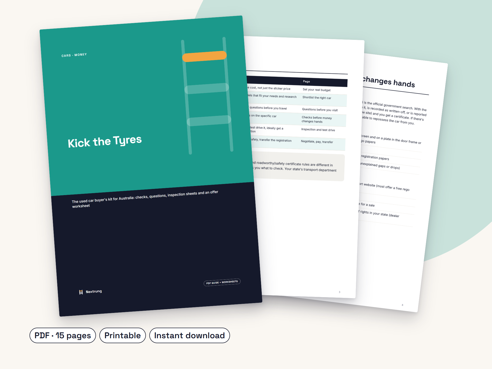

Buy a used car in Australia without getting burned
Kick the Tyres: The used car buyer's kit for Australia: checks, questions, inspection sheets and an offer worksheet
- True-cost budget, so the car you can afford is the one you buy
- 11 questions to ask before you visit, plus scam warning signs
- 16-point inspection and 10-point test-drive sheets
- A walk-away list and an offer worksheet with a simple negotiation script
- Transfer checklist and a vehicle sale receipt
Made for: First-time and budget used-car buyers in Australia buying privately or from a dealer.
See it working
The PPSR check shows money owing, written-off and stolen status. The kit shows when to run it, what to match on the rego papers, and gives you a 16-point inspection sheet and 10-point test drive sheet to tick off on the day.
What's inside
- 6-stage buying process overview
- True-cost budget: upfront and yearly costs
- Car comparison sheet for up to 3 cars
- 11 questions to ask before you visit, plus scam warning signs
- PPSR, VIN and paperwork checks explained
- 16-point inspection sheet and 10-point test-drive sheet
- Walk-away list
- Offer worksheet and a simple negotiation script
- Payment, transfer checklist and a vehicle sale receipt
- Instant PDF download, A4, printable
Look inside


Buying a used car privately or from a dealer? Kick the Tyres walks you through six stages, from budget to paperwork, with printable sheets you take with you on the day.
It's made for Australia: it explains the PPSR check (money owing, written-off, stolen), what to match on the rego papers, and what to check on your state's transport website, without pretending every state has the same rules.
Print one inspection sheet per car, tick through it, and use the offer worksheet to decide your walk-away price before you start negotiating.
Who it's for
- First-car buyers in Australia
- Anyone buying a budget used car privately or from a dealer
Not for
- Replacing a mechanic's inspection (it tells you when to get one)
Is it worth it?
A$12 once, a fraction of what one bad car costs. Instant download, prices in AUD. Digital downloads have no change-of-mind refunds; if a guide is faulty or not as described, we'll fix it, replace it or refund you.
Questions
Is this for Australia only?
It's written for Australia (PPSR, state rego rules). Much of the inspection and negotiation content works anywhere, but the paperwork section is Australian.
Does it replace a mechanic's inspection?
No. It helps you spot obvious problems and ask the right questions, and it recommends a professional pre-purchase inspection.
Does it cover my state's exact rules?
It tells you what to check. Rules and fees change and differ by state, so it points you to your state transport department for the current details.
How do I get it?
Instant PDF download after purchase. Print the inspection sheets as many times as you need.
Print it before you go and see the first car.
Please note: This kit is general information only and is not legal, financial or mechanical advice. Vehicle registration, transfer, duty and safety-certificate rules differ between Australian states and territories and can change, so check your state transport department and ppsr.gov.au for current requirements and fees. Always get a qualified mechanic to inspect a vehicle before buying. Using this kit doesn't guarantee a car is free of faults. This guide was drafted with the help of AI writing tools, then edited and designed by Nextrung.